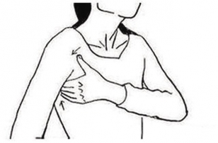
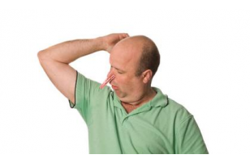

狐臭知识
-

夏天来了怎么检测自己是否有狐臭？
每个人都喜欢自己身上气味芬芳，能够招人喜爱和亲近。如果身体体味很重，所有人都会远离自己，尤其是女性，更是会痛苦万分... -

有狐臭的人都有这些特点
狐臭和耳油是一对好兄弟，有狐臭也常伴有耳油。因为狐臭和耳油是同一个基因控制的，都是大汗腺惹的祸。腋下的大汗腺分泌过... -
狐臭对孩子的伤害最大！
虽然狐臭不会对人体造成伤害，但它对人们的生活影响却很大。特别是对儿童来说，有狐臭的儿童的心理必须承受不必要的伤害。... -

出汗后腋下气味大是腋臭还是汗臭?
腋臭也被称之为狐臭，大部分的腋臭患者，散发出来的异味来自腋窝底下，也有来自身体其他部位的。腋臭是怎么产生的?腋臭的... -

腋臭会引发哪些并发症
腋臭这种疾病可以说给患者造成了非常严重的影响，尤其是患者的社交圈和工作，而且这种疾病还有可能会引起一些并发症出现，... -

狐臭与季节之间有关系吗?
狐臭与季节有很大的关系的，很多患者都不知道，其实狐臭这个疾病是受季节影响的一种疾病，如果遇到夏天的话，就会出现疾病... -

去除狐臭的十大民间小偏方
一些患有狐臭的朋友，我想她们心里一直有一个隐患，就是身上的狐臭用什么样的方法都没有办法去除。试过擦一些香水和精油什... -
狐臭的朋友们生活中应注意什么
狐臭是腋臭的俗称，是体内分泌出来的一种物质。狐臭相信大家都知道，那么大家都了解狐臭吗?如果您想要治疗好这个疾病，就... -

狐臭会给我们造成什么危害
狐臭是人体的腋下产生的一种难闻食物气味，它的出现是汗液分泌与细菌分解相互作用的结果，在身体活动或夏季大量出汗后，味... -

汗水多与腋臭有关系吗
汗水多与腋臭有关系吗?腋臭，也被称之为狐臭，由于腋下大汗腺细胞间隙值过大，脂质等大分子畅通渗入官腔而大量排出，再被... -
民间去狐臭的小偏方
治狐臭偏方，狐臭真是令自己又令他人厌烦的事，那么下面小编为大家介绍民间治疗狐臭偏方。治狐臭偏方1、用桃叶50克，南... -
怎么检测自己是否有狐臭
生活中，有不少的腋臭患者都有这样的心理，担心腋臭治疗难度大，钱花了不算，还痛苦，这里专家提醒：其实只要用专业的治疗... -

狐臭带来的危害不容小觑
腋臭的危害有过度焦虑，因为自己身体随时都在散发着刺鼻的气味，所以很多患者每天都会害怕引起别人对自己的不满甚至厌恶，... -

你知道什么样的臭才是狐臭吗？
狐臭又称为腋臭、臭汗症等，是由患者腋窝、外阴口角等部位的大汗腺(又叫顶浆腺)排泄的汗液，脂肪酸比普通人高，呈淡黄色... -

让人们远离狐臭的好方法
身体上要是出现异味的话就会让很多人避而远之，而腋臭给我们带来的困扰更为严重，所以我们平时应该要做好相关的预防工作，...